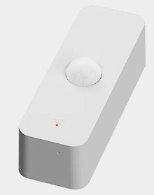
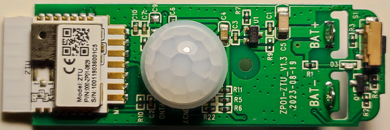
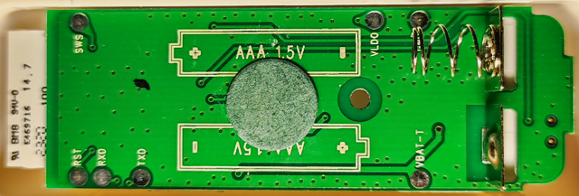
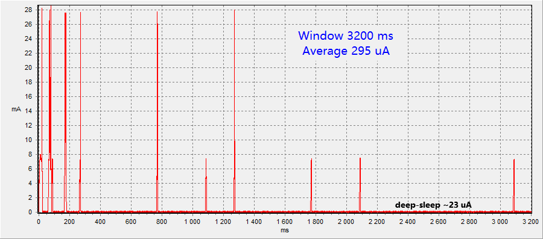

TS0202 (_TZ3000_lf56vpxj): Tuya ZigBee ZP01

Module ZTU, Sensor: BS612


| GPIO |
Function |
| PC0 |
KEY (On "0") |
| B4 |
LED (On "1") |
| PD7 |
PIR (On "1") |
На плате установлены резисторы R5 и R6. Они задают длительность сигнала срабатывания сенсора на более 30 секунд. Для уменьшения потребления и установки длительности сигнала на 1 секунду эти резисторы следует удалить. Иначе будет не задать длительность включения по срабатыванию на менее чем 40 секунд.
Custom FirmWare
Original FullFlash bin
Power consumption (original FW) when motion is detected:
